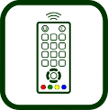
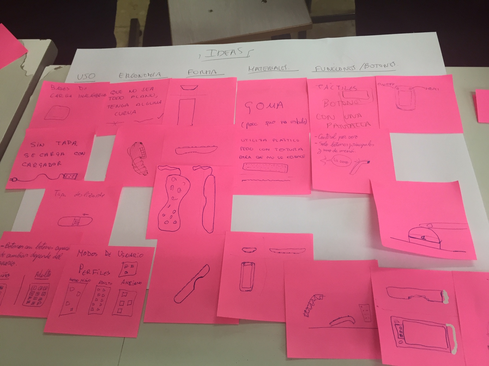

2- Taller rediseño de mando de TV

Taller mejora de producto existente. Re-diseño
Tiempo estimado: 2- 3 sesiones de 50 minutos
ESO y Bachillerato
Equipos de 4-6 integrantes + 1 facilitador
¿Por qué un mando de televisión?
Para la realización de este taller es conveniente elegir un producto de uso cotidiano.
Es mejor comenzar con algo con lo que estemos familiarizados y que además sea un producto que utilizan muchos tipos diferentes de usuarios, para poder ponernos en la piel de diferentes personas. Recuerda que no diseñamos para nosotros mismos.
1- Investigar (divergente):
Investigación previa individual:
Pedimos al alumnado que haga una investigación previa sobre el tema, en este caso sobre los mandos de tv. Les pedimos que respondan por escrito a las siguientes preguntas, buscando información o fijándose en el mando de tv de su casa: ¿Sabes para que se utilizan todos los botones?, ¿Son adecuados para todas las personas?, ¿Se te ha resbalado, se te ha caído alguna vez?
De esta forma comenzamos la actividad con algo de información sobre el tema que vamos a tratar.
Puesta en común:
La dinámica en el aula comienza con la puesta en común de lo que los integrantes del grupo han encontrado para empezar a profundizar sobre el tema.
Herramienta: panel de conclusiones
Para ello, dividimos una hoja A3 en varias columnas, habitualmente en tres: tipos de usuarios, contextos de utilización y necesidades no cubiertas.
De este modo hacemos un panel visual con lo que sabemos del tema, a modo de conclusiones.
El objetivo de esta herramienta de resumen es que visualicen que puede haber diferentes caminos para abordar cualquier proyecto y que pueden plantear diferentes retos.
Lo completamos en equipo de la siguiente forma:
Con esta dinámica potenciamos la empatía.
2- Enfocar:
Elegimos un tipo de usuario: niños, ancianos.. o varios: para toda la familia. Elegimos un contexto: el hogar, el profesional, hostelería.. y 3 necesidades no cubiertas que queremos solucionar para la tipología de usuario o usuarios seleccionados.
Sabemos que podríamos profundizar mucho más en el conocimiento de los usuarios, pero solo estamos entrenando.
Una vez hemos reflexionado sobre el panel de conclusiones observando que carencias, problemas, necesidades, tienen los distintos tipos de usuario; elegimos por consenso: una tipología de usuario, un contexto o contextos de utilización y tres aspectos que queremos mejorar.
Escribimos lo que hemos elegido por consenso en un documento A4, que llamamos “panel del reto”
Herramienta: Panel reto.
Ejemplo:
Reto: ¿Cómo podríamos diseñar un mando específico para niños de 3 a 8 años, que ofreciera otras funciones, fuera robusto…?

Ahora ya sabemos qué queremos conseguir.
Si no hubiéramos trabajado esta fase no sabríamos cuáles son las necesidades no cubiertas de las personas, no sabríamos todo lo que podemos mejorar en un mando de tv.. nos habríamos puesto a trabajar pensando en diseñar un mando para nosotros.
3- Idear
Utilizamos un soporte A3 para ir colocando, mediante notas adhesivas las diferentes ideas que nos van surgiendo.
Herramienta: panel de ideas

Volvemos a utilizar un papel grande, con un A3 será suficiente. hacemos 7 columnas: uso, funciones, ergonomía, materiales, medioambiente, contexto y forma. En cada una de las categorías empezamos a colocar notas adhesivas con todas las ideas que se nos ocurran.
Con este panel simplificamos la técnica de lluvia de ideas, de forma que las ideas ya las ordenamos en categorías y no tenemos que clasificarlas a posteriori.
Herramienta: propuesta individual
Cada persona elige una idea del panel de las ideas (suele ser una hibridación de soluciones formales y funcionales) y realiza un dibujo a tamaño real de la idea (un dibujo de perspectiva o las vistas que sean necesarias para entender el producto, del interface, etc.) Se hace una puesta en común y una vez analizadas las ideas, haciendo referencia al reto, se selecciona una de ellas para desarrollarla entre todos los miembros del equipo.

Una vez están dibujadas las ideas se ponen en común. Cada participante tendrá dos minutos para explicar su idea, sus características principales.
El equipo debate brevemente, hasta que es capaz de seleccionar una de las ideas para ser desarrolladas. A veces sucede que se seleccionan características, soluciones o detalles de varias ideas, formando una idea nueva.
En este momento se recuerda al equipo que las ideas son del equipo. Cada persona explica las que le parecen mejores y el motivo. En principio, se elige por consenso.
Tabla de valoración
Para facilitar la elección se puede utilizar la herramienta “ tabla de valoración”.
En ella escribiremos los aspectos más importantes a tener en cuenta con base al reto seleccionado y puntuamos cada una de las ideas respecto a esos aspectos. De esta forma obtendremos de una forma bastante objetiva la mejor idea.
Seguramente habrá ideas que respondan mejor al reto. Volveremos a leerlo o haremos referencia a él para asegurar que la idea seleccionada es la que cubre mejor las necesidades de los usuarios seleccionados.
Empieza el trabajo en equipo, parte de este se dedicará a desarrollar la idea y mejorarla, parte a realizar un prototipo en plastilina o en cartón y papel y el resto pensarán en un nombre, un slogan y un logotipo.
4- Prototipar y testar
Durante esta fase se divide el trabajo del equipo: unos dibujan la idea seleccionada en detalle a tamaño real, otros van construyendo el prototipo en plastilina o cartón y papel; y por último alguien se encarga del nombre, el slogan y la imagen del producto. Cada uno elige lo que prefiere.
La persona que facilita la dinámica va prestando ayuda a quién más lo necesita y anima a que colaboren unos con otros conforme las tareas se van acabando. Hay que prestar un atención especial a la persona encargada del nombre, slogan y logo.
Es esencial la coordinación entre ellos: la persona que dibuja va consultando y consensuando con sus compañeros y compañeras: las medidas, la ubicación de los botones,(si no está totalmente definida); la persona que construye con plastilina se asegura que el tamaño y la forma coincide con el dibujo, piensa en los colores, los tamaños de los botones, prueba con sus compañeros si se coge bien (ergonomía), etc. La persona que está creando el nombre va ofreciendo alternativas a su equipo, que se va decantando por una u otra o incluso propone algún cambio o alternativa.
Para testar los prototipos los grupos se dividen. La mitad del grupo se queda a explicar su idea y la otra mitad se desplaza hacia otro grupo para poder conocer otra idea y aportar su punto de vista.
Este proceso se puede repetir en varias ocasiones. Cada vez que se produzca habrá un pequeño debate para decidir qué cuestiones se pueden mejorar en el prototipo.
El equipo está muy concentrado, unos van mejorando el prototipo, otros mejoran el dibujo, los últimos van pensado en nombres y van haciendo consultas a sus compañeros o los instan a proponer ideas…
Presentar:
Panel de presentación

Sirve para sintetizar lo más relevante de la idea.
La actividad finaliza con una presentación oral de la idea por parte de los equipos.
Se apoyan en varios elementos para realizarla: panel de presentación A3, prototipo y guión de presentación.
Vamos a contar lo que hemos hecho: el proceso y el resultado final en solo 5 minutos. Esto requiere una preparación por parte del equipo.
Los primeros que se quedan sin tarea elaboran un guión de presentación en el que describen el producto, las necesidades que cubre, a quién va dirigido, etc. Todos los integrantes del equipo participan explicando parte de la presentación, que se realizará contando como máximo con 5 minutos.
Es importante reservar unos minutos a la preparación de la presentación.
En esto también podemos ser creativos. Podemos hacer un story telling o contar el producto desde el punto de vista de las personas usuarias.
El guión de presentación incluye la respuesta a las siguientes preguntas: ¿Qué es?, ¿Para quién es?, ¿Dónde se utiliza?, ¿Qué mejora?, ¿Cuáles son sus características principales?
El docente y el resto de compañeros y compañeras señalan lo que más les ha interesado de la idea.
Se trabaja con tiempo muy limitado, con lo que animamos a cada miembro del equipo a que sea proactivo, se centre en resolver los retos y tareas y colabore con sus compañeros y compañeras aportando todos los recursos y habilidades de que dispone.

Design Thinking en educación por Elena Bernia bajo licencia Creative Commons Reconocimiento-NoComercial-CompartirIgual 4.0 Internacional License.